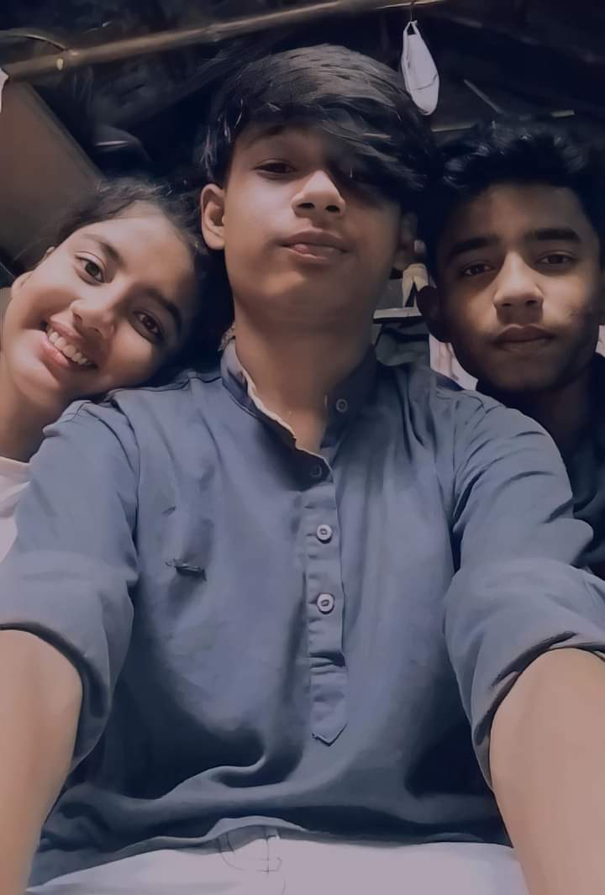

to my page.
thisis not a interesting page but,i create this page for my experience.Today 29 April i'll start the work for this page and i also new this feild so i try to my best and i hope it will be good to show .
thank you
its T R I O
This is our most complicated relationship in the world (my world)

introduction
i will start to tlak the right side person of the photo.
its me (sumit Gachi)
Then middel person
is my brother (debmallya bodhak)
at last the last person of the picture
is my sister (shreya Gachi)
You see 3 people now and you think that maybe I am going to talk about these 3 people but you are thinking wrong.
moral of the picture
What is visible does not happen and what happens is not visible, and you can never because you have already seen something like yourself, then how will you see the real thing?
so
Fuck your brain
what did he say.
If you just look with your eyes then you will understand.
you say to your brain shut the fuck of
Let's start our story
long time ago almost 3 years old. I was realised I'm the world bigest dumb as Fuck but
after one year i reliesed
nope bro i am worng. many peoples around me are dumb as fuck there more than me,
then i meet my brother one of the bigest chtiya on this world (debmallya bodhak)